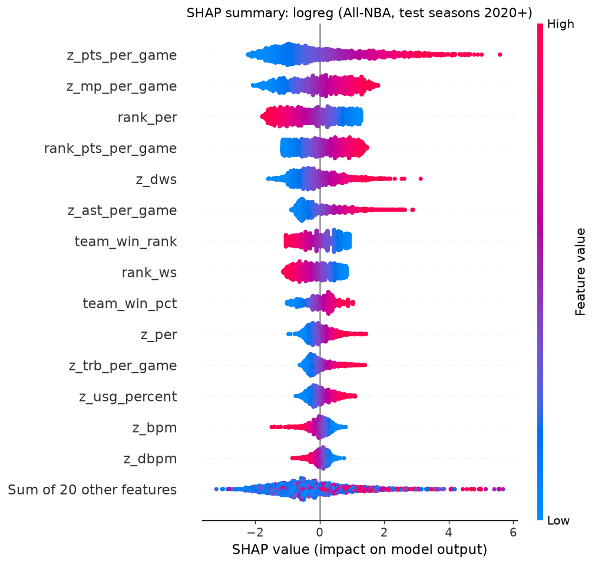
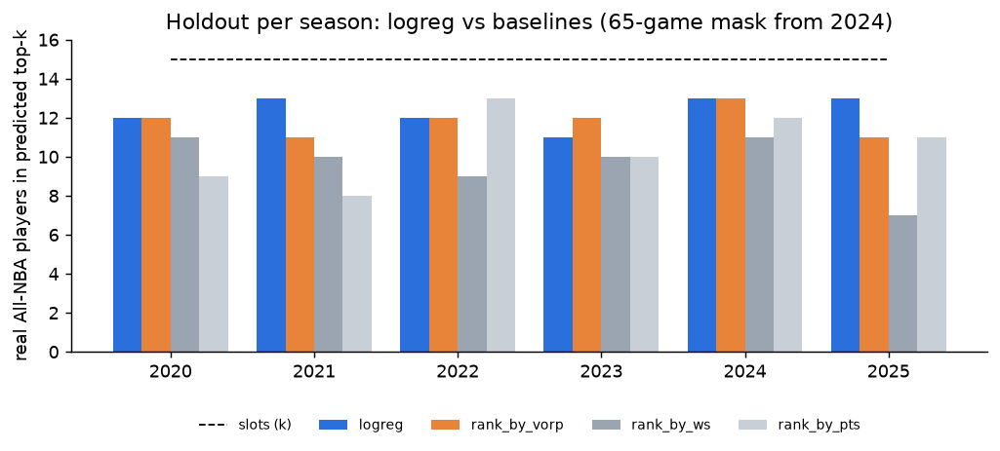

NBA analytics · calibrated logistic regression + SHAP
Who makes the 15 All-NBA spots? The model reads season-relative advanced stats (PER, WS, BPM, VORP), box-score production, availability and team success. It's trained on 1980-2019, then scored once on 2020-2025, a stretch it never saw. Code on GitHub
90 All-NBA slots over six seasons, with the 65-game rule applied from 2024. "Found" counts real selections that land in a model's top 15 each season.
Ranking by VORP alone is a strong baseline. The model's edge on the holdout is small and within noise. Across the 20 cross-validation seasons (2000-2019) the gap is clearer: 80% of selections found vs 69%.
Impact metrics carry most of the weight, then scoring volume, then availability and team record.

